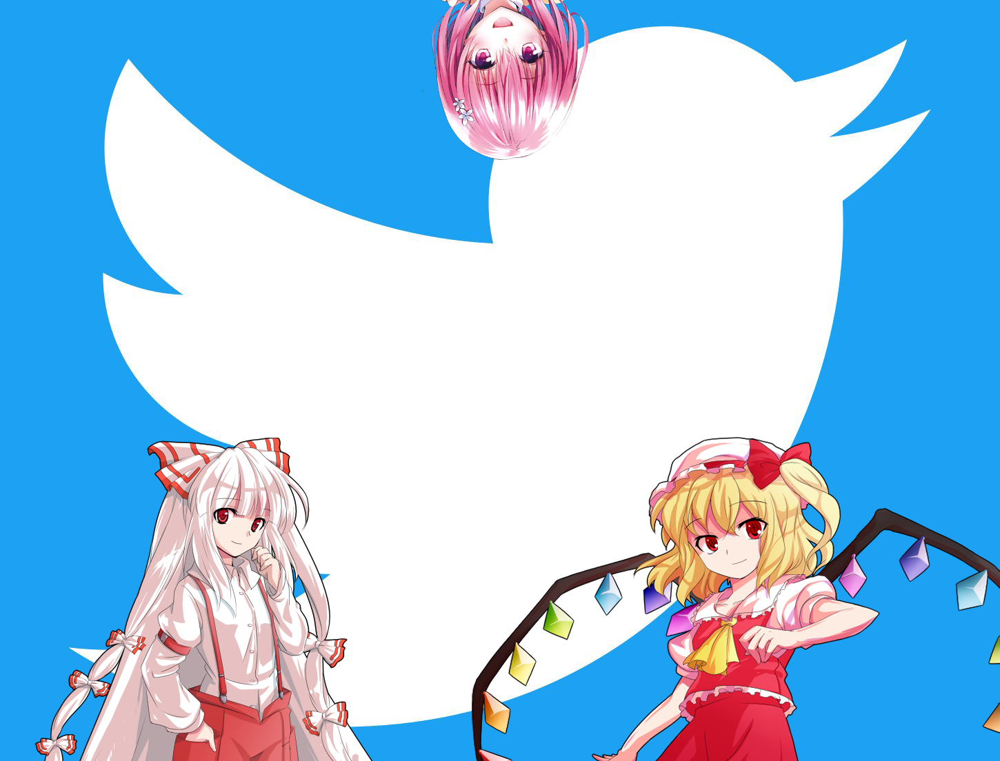

Je m'appelle Raphaël, je suis un adolescent passioné par l'informatique, la culture nippone et les jeux vidéo. J'ai cette passion pour la programmation depuis mes 10 ans et je compte bien réaliser mon rêve qu'est de créer un jeu vidéo à moi tout seul (enfin tout seul, pas avec une base quoi, vraiment un truc de A à Z). C'est à peu près tout, même si vous avez remarqué que oui, ce n'est pas tout.
Alors ce que j'aime, bah y a beaucoup de choses que j'aime. Déjà j'aime manger et dormir, ça je pense que c'était évident. Mais ce que j'aime aussi c'est... Touhou Project. J'adore Touhou Project. Et le fait que ce soit une licence complètement libre la rend encore plus cool. On en fait ce qu'on veut et le saint ZUN nous regardera avec un air fier (j'en fait beaucoup là non ?) D'ailleurs, mes projets comptent un fangame Touhou que j'espère pouvoir bientôt commencer mais pour le moment je ne dirais rien. Mon anime/manga préféré est Kill La Kill et je pense qu'il le restera pour toujours même si j'ai une très très forte sympathie envers UQHolder!, la suite de Negima que je vous conseille d'aller voir, Negima a eu le droit à son succès mais pas sa suite et c'est bien dommage je trouve.
